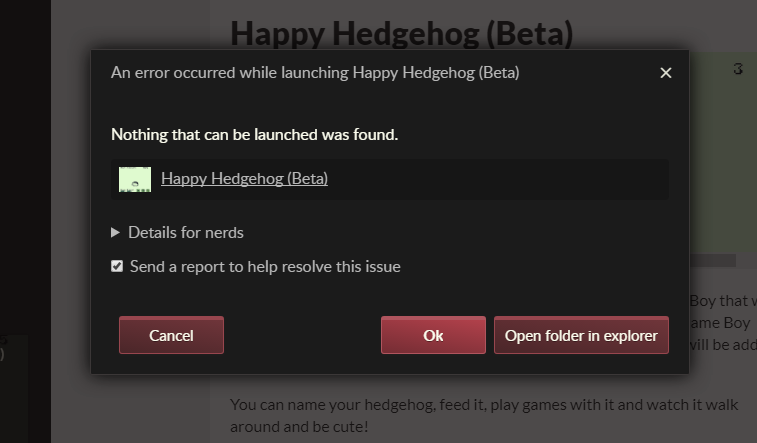
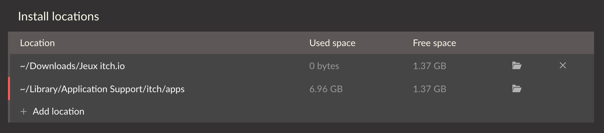

用 itch 客户端踩过的五个坑：装不上、打不开、更新失败怎么办
itch.io 客户端看着简单，实际在系统版本、杀毒拦截、依赖项等方面藏着几个高频翻车点。本文整理我踩过的五个真实坑，每个都有症状、原因和解法，附防坑清单速查。
第一次装 itch 客户端时我以为就是个"独立游戏 Steam"——双击安装、登录、找游戏，完事。结果前前后后踩了好几个坑，从装不上到打不开再到更新报错，折腾了快半小时才跑起来。今天把这些坑整理出来，给新来的朋友省点时间。
先简单说下这东西是什么：itch 是 itch.io 官方的桌面客户端，itch.io 本身是独立游戏开发者的作品分发平台——类似 Steam 但更开放，很多 indie 开发者只在这里首发。客户端的定位就是帮你管 itch.io 上的游戏库，支持自动更新、离线玩、HTML5 网页游戏本地化这些功能。想看更多功能介绍可以去 itch 官网 翻翻。
坑一：双击安装包没反应——你的系统版本可能不够
症状：下载完安装包双击，要么弹个错误窗口说"不支持的操作系统"，要么干脆没反应、进程一闪就退。
原因：itch 客户端最低要求 Windows 7。对，你没看错——现在还有人在用 XP 或 Vista 吗？如果你是，那 itch 从根上就装不了。官方 FAQ 里这条被问爆了，我自己公司那台 2012 年的旧笔记本就是 Vista，折腾半天最后只能用网页版。
解法：两个选项——要么升级系统（Windows 7 起步），要么直接用浏览器访问 itch.io 网页版。网页版功能少点但不挑系统。装之前先确认自己系统版本，省得白忙活。

坑二：杀毒软件报毒拦截——这不是木马
症状：安装到一半被 Windows Defender、360、火绒之类的弹框拦截，要么直接隔离要么阻止网络请求。
原因：itch 客户端本身是安全的，但它做的事情容易被杀软误判——它要联网下载游戏包、要在安装位置写文件、还要扫描本地游戏库。独立游戏分发平台的工具链经常被杀毒软件当成"未知程序"拦一下。我刚装完第一次启动就被 Defender 拦了，以为下到毒了，差点卸载。
解法：先确认你从 itch 下载 拿的是官方客户端，不是第三方改的。然后把客户端加进杀毒软件的白名单或排除项里。Defender 的话进"病毒和威胁防护设置"→"排除项"→"添加文件夹"，把 itch 的安装目录加进去就好。
坑三：Linux 上运行报 libgtk-3.so.0 找不到
症状：在 Ubuntu、Debian 或 Fedora 上安装完，运行时终端报 error while loading shared libraries: libgtk-3.so.0: cannot open shared object file。
原因：itch 客户端用 GTK3 构建 GUI，但不是所有 Linux 发行版都默认带 GTK3 运行库——尤其是服务器版、精简版或某些 rolling release 发行版。我在一台最小化安装的 Debian 上遇到过，折腾了好一会儿才想起来装依赖。
解法：根据你的发行版装一下：
- Debian/Ubuntu 系：
sudo apt install libgtk-3-0 - Fedora/RHEL 系：
sudo dnf install gtk3 - ArchLinux：
sudo pacman -S gtk3
装完就能跑了。如果你用的是 tar.xz 可携带版本，也一样需要 GTK3 依赖。
坑四：HTML5 网页游戏想用启动选项——没用的
症状：想给某个 HTML5 网页游戏加启动参数（比如分辨率、窗口模式），结果启动选项那一栏灰着，改了也不生效。
原因：itch 上不少游戏提供 HTML5 网页版——浏览器里点开就玩的那种。这些游戏在客户端里虽然也能装到本地，但本质还是用客户端内置浏览器跑的，没有原生可执行文件。启动参数、包装器这类功能只对原生二进制文件有用，网页版不吃这一套。我之前想给一个网页版游戏加 --no-gui 参数，研究了半天才发现这功能根本不支持。
解法：想折腾启动选项的话，只能用游戏的原生下载版（如果有的话）。很多作者会同时提供网页版和原生版，仔细看下游戏页面的"下载"区域。没有原生版的话，就老老实实在线玩或装到本地离线玩。
坑五：安装位置选了 Program Files——自找麻烦
症状：游戏装到一半卡在"准备安装"，或者更新时报"拒绝访问"、"无法写入文件"。
原因：itch 客户端从设计上就是不需要管理员权限的。它默认把安装位置放在当前用户可写的目录（比如 C:\Users\你的名字\AppData\Local\itch），而不是 Program Files。你要是手动改到 Program Files，Windows 的 UAC 和权限管控就会跳出来搞你——装游戏、更新、删存档全要弹权限确认，有时候干脆静默失败。
解法：别手改默认路径，或者选个明确的用户目录（比如 D:\Games\itch）。itch 文档里专门有一章讲安装位置管理，默认设置基本就是最省心的配置，别瞎动。

防坑清单（速查版）
说了这么多，把要点整理成一个清单，下次装或出问题时对着查就行：
- 系统先确认：Windows 7 以下别装，XP/Vista 直接用网页版
- 杀毒白名单：第一次启动如果被拦，先加排除项，别慌着删
- Linux 补 GTK3：
apt install libgtk-3-0，一条命令搞定 - 网页版不玩参数：HTML5 游戏的启动选项别折腾，换原生版
- 安装路径别碰 Program Files：默认路径或自定义用户目录，省心最重要
其实 itch 客户端整体还是挺良心的——轻量、干净、没广告，自动更新也挺稳。踩的这些坑大多是"小众场景默认你知道"的那种，提前有个概念就不会慌。装完跑起来之后，日常用基本没什么幺蛾子了。
想深入了解功能细节的话，文档站有完整的使用手册，从系统要求到开发者视角都覆盖了。我写这篇的时候也参考了上面不少 FAQ 内容，实际排障时直接翻文档比瞎搜靠谱。
相关资料我同步到了三个仓库：GitHub 主库、Gitee 镜像、GitCode 同步，里面有完整的软件文档和配置说明，欢迎交流。